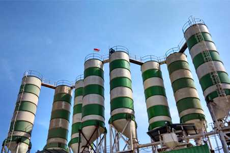

MERAK JAYA
BETON
PT. MERAK JAYA BETON merupakan perusahaan yang bergerak dalam bidang beton siap pakai ( Ready Mix Concrete )
PT. MERAK JAYA BETON merupakan perusahaan yang bergerak dalam bidang beton siap pakai ( Ready Mix Concrete )

Lahir sebagai cikal bakal perusahaan pada tahun 1989, UD. Merak Jaya pertama kali berdiri di Pasuruan Jawa Timur dan bergerak dalam bidang usaha pemecah batu (stone crusher). Pada tahun 2002 PT. MERAK JAYA BETON yang bergerak dalam bidang beton siap pakai ( Ready Mix Concrete) mendirikan batching plant pertama di Pasuruan Jawa Timur. Pada tahun 2011 PT. MERAK JAYA BETON mendirikan batching plant di Bali. Dan pada tahun 2012 menambah batching plant di Karawang - Jakarta. Seiring berjalannya waktu, PT. MERAK JAYA BETON telah mendirikan batching plant dengan metode Wet Mix dan Dry Mix diseluruh Jawa dan Bali. Didukung oleh stone crusher di beberapa wilayah serta quarry pasir, kami siap memenuhi kebutuhan pasar akan teknologi beton di seluruh wilayah Indonesia.
